Pemandangan Alam, Perkebunan, dan Usaha Mikro.
Dusun Belang terkenal dengan suasana alamnya yang sejuk serta potensi hasil bumi dan olahan pangan lokalnya.
Sebagian masyarakat merintis usaha kuliner (seperti produksi roti rumahan atau makanan ringan) dan bertani. Kami mengamati bahwa dusun ini memiliki nilai jual agrowisata dan kuliner yang sangat prospektif.
Sektor ekonomi mikro di Dusun Belang menunjukkan progresivitas yang luar biasa melalui hilirisasi produk pertanian lokal menjadi komoditas konsumsi yang bernilai tambah tinggi. Ekosistem kewirausahaan ini digerakkan oleh inisiatif individu maupun kelompok yang berani merambah pasar di luar daerah.
Ketahanan ekonomi Dusun Belang salah satunya ditopang oleh klaster pengolahan makanan ringan. Di wilayah RT 27, terdapat "Opak Gambir Mawar" yang dikelola oleh Febriana sejak tahun 2019. Usaha ini menunjukkan adaptasi pemasaran modern dengan mengkombinasikan jaringan reseller dan transaksi daring melalui WhatsApp untuk memasarkan produk opak gambir varian jahe dan lipat gula merah.
Sementara itu, inovasi pengolahan hasil panen terlihat jelas di RT 28 melalui "Keripik Mbothe Al Barokah" milik Ibu Sumini. Beroperasi selama kurang lebih empat tahun, usaha ini secara cerdas memanfaatkan komoditas talas (mbothe) dan pisang lokal untuk diolah menjadi aneka keripik dan tempe dengan varian rasa orisinal, gurih, dan pedas manis. Kualitas produksi rumahan ini terbukti kompetitif karena jangkauan pemasarannya telah berhasil menembus pasar regional hingga ke Surabaya dan Suruh.
Keistimewaan Dusun Belang yang membedakannya dari wilayah lain adalah pergerakan progresif pemudanya. Di bawah kepemimpinan Bapak Latif, gabungan pemuda dari RT 27 dan RT 28 membentuk kelompok SKD News atau "Pemuda Segudang Inovasi". Kelompok yang diisi oleh sekitar 50 anggota aktif ini berfokus pada eksploitasi nilai guna bambu dengan menjalin kerja sama strategis bersama Bambu Nusantara.
Produktivitas kelompok SKD News ini sangat masif dan inovatif. Mereka tidak hanya menghasilkan kerajinan bambu konvensional yang juga dipraktikkan oleh perajin senior seperti Pak Senin Bakri di RT 31, melainkan mengekspansi produk turunan seperti garam bambu, briket arang bambu, sapu aren, dan rebung petung. Manajemen suplai mereka sangat terstruktur, dengan mendatangkan bibit bambu dari Bogor, Mojokerto, hingga Bandung. Skala pemasaran SKD News telah menjangkau Surabaya secara daring, menyuplai bahan mentah ke wilayah Dongko, dan bahkan tengah menyiapkan proyeksi distribusi garam bambu hingga ke Flores, Nusa Tenggara Timur.
Dalam aspek sosial-kultural, Dusun Belang yang jejak sejarah dan leluhurnya bermula dari kawasan RT 27 ini, konsisten memelihara identitas budayanya melalui berbagai kesenian tradisional dan praktik keagamaan komunal.
Bidang kesenian menjadi salah satu fondasi kohesi sosial yang menonjol di Dusun Belang, bersanding dengan kesenian Gong dan Hadroh. Kesenian yang paling digemari oleh masyarakat adalah Seni Tayub. Pelestarian kesenian ini dijalankan secara disiplin dan terstruktur di RT 32, di mana kelompok Tayub tersebut diketuai oleh Pak Bejan dan dilatih langsung oleh Pak Yanto melalui agenda latihan rutin setiap malam Minggu.
Aktivitas keagamaan berjalan harmonis dengan tradisi lokal yang ada. Hal ini tercermin dari kegiatan Sholawatan serta rutinan "Jumat Pon" yang diselenggarakan secara bergilir dari satu mushola ke mushola lainnya. Di samping itu, masyarakat memelihara nilai spiritual melalui tradisi selamatan kecil-kecilan yang rutin digelar setiap malam tanggal 1 pada pergantian Tahun Baru.
Semangat pelestarian budaya dan solidaritas warga Dusun Belang ini mencapai puncaknya pada kegiatan perayaan tahunan desa. Masyarakat mengintegrasikan hiburan, olahraga antar-dusun, pentas seni, dan tradisi ronda tethek dengan pemberdayaan ekonomi melalui bazar UMKM. Bazar ini berfungsi sebagai ruang pamer eksklusif yang memberi kesempatan bagi para pelaku usaha lokal untuk memperkenalkan produk mereka langsung kepada khalayak luas, menciptakan simbiosis mutualisme antara budaya dan ekonomi di Dusun Belang.
Dokumentasi observasi di Dusun Belang.
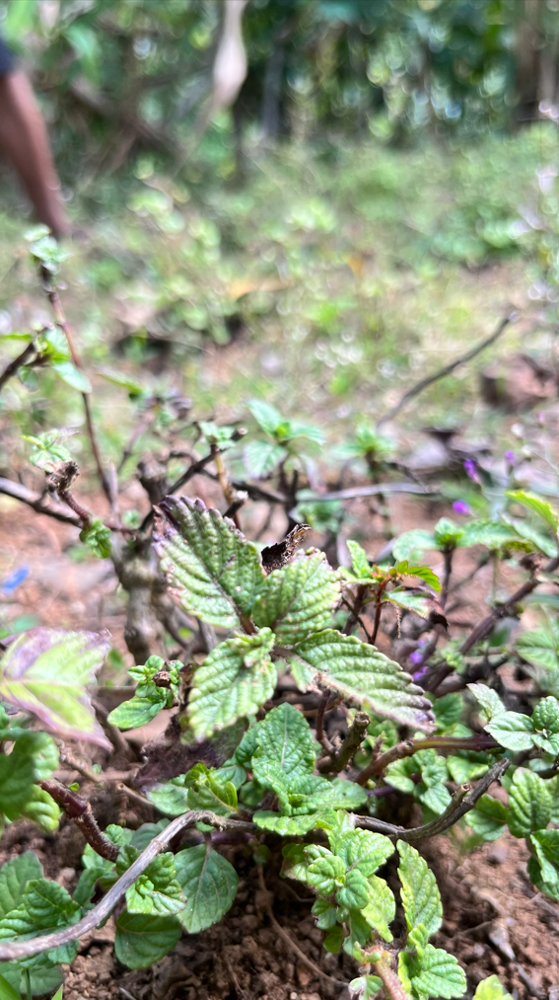
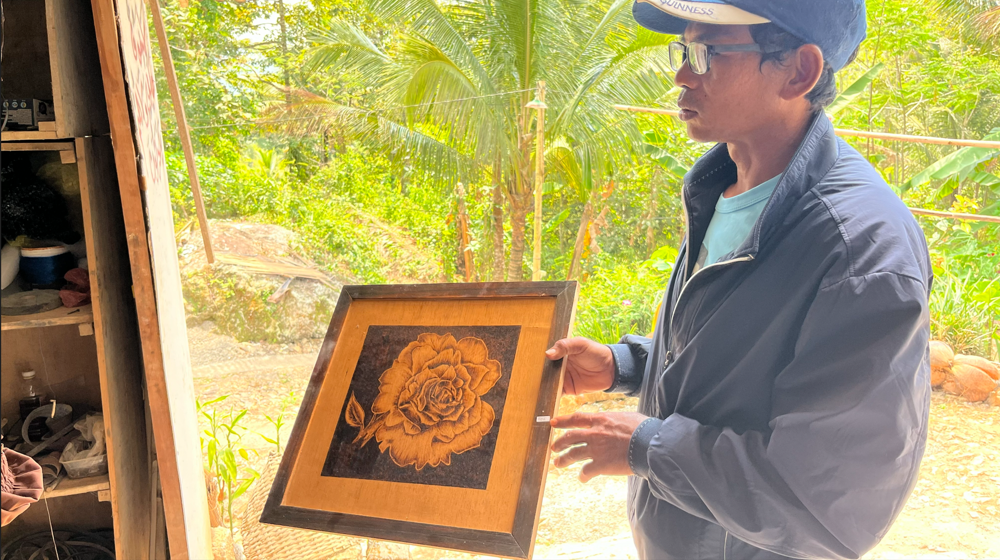
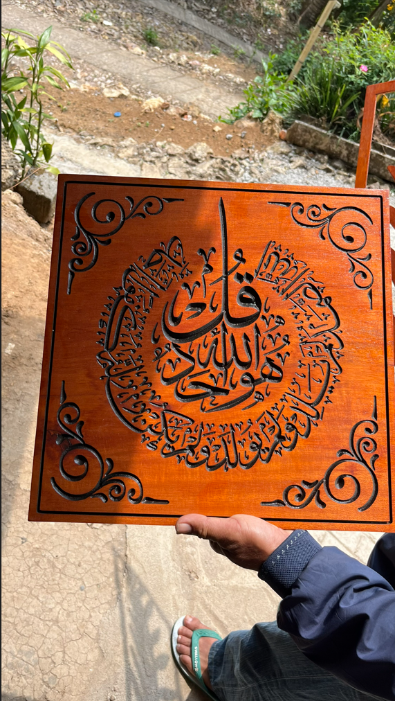
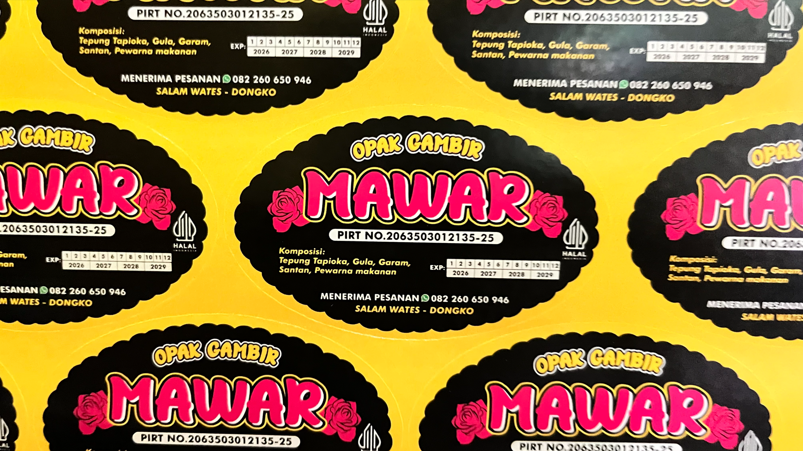
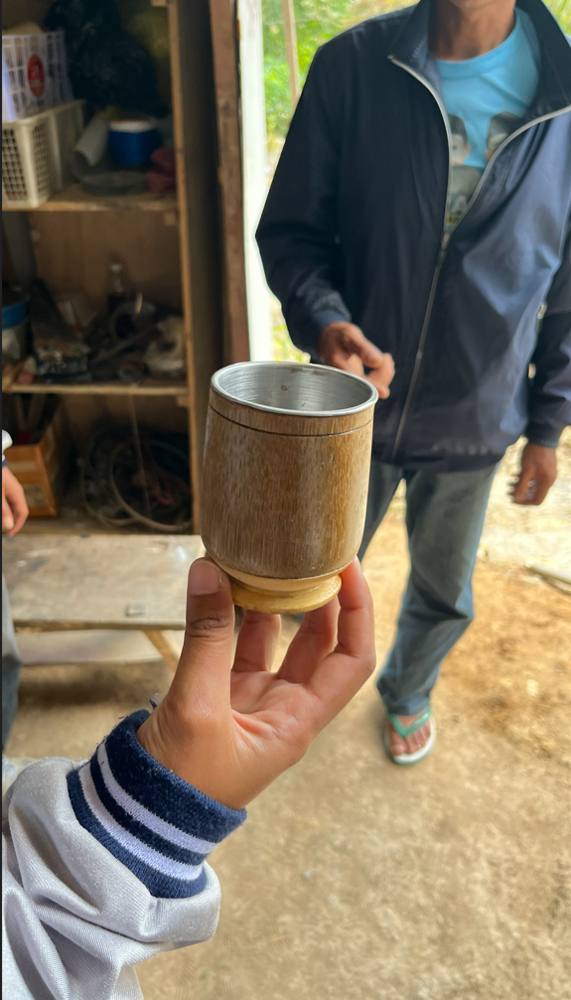
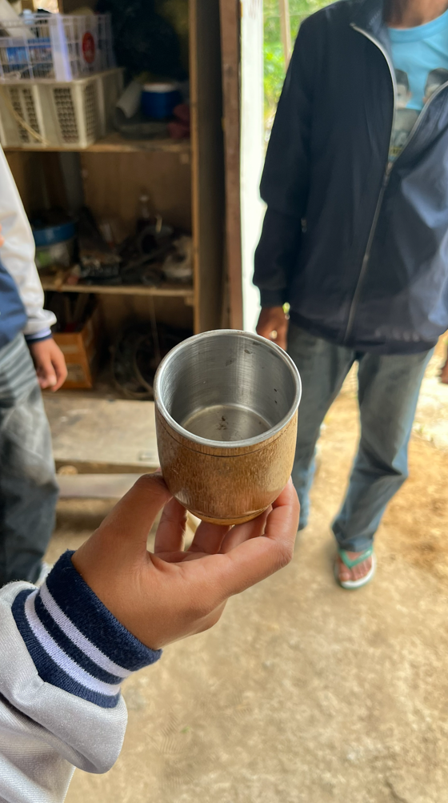
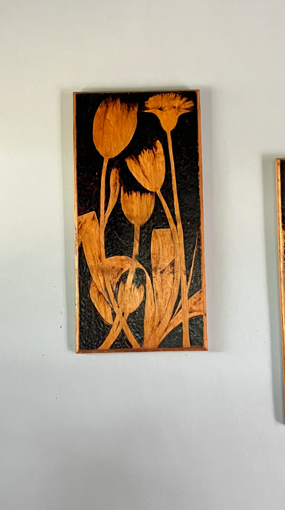
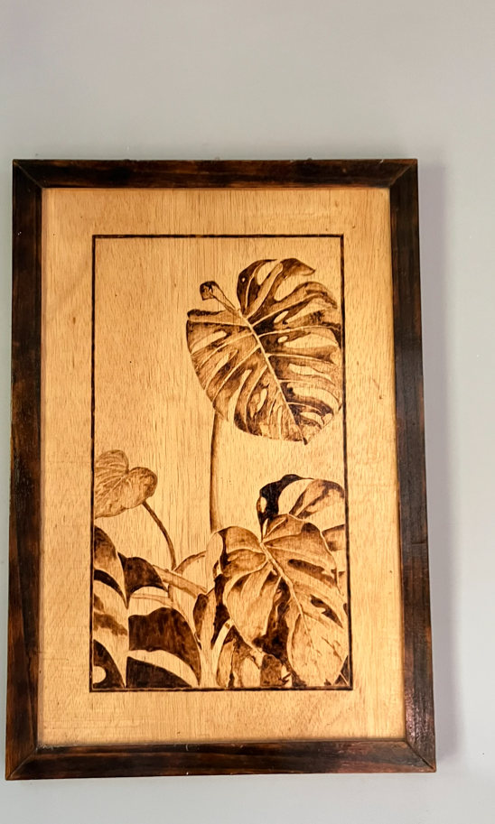
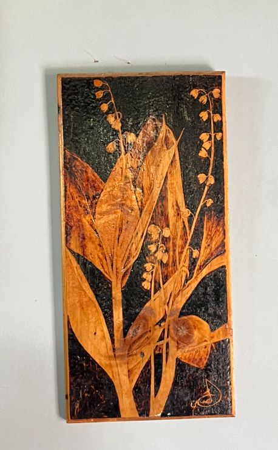
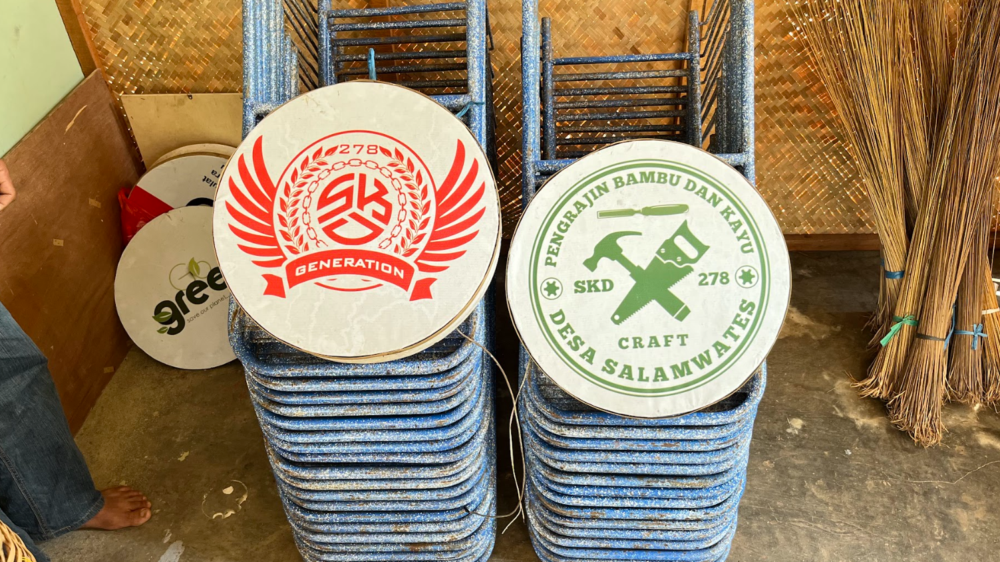
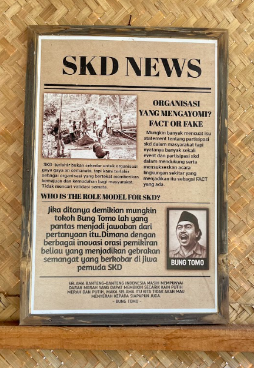
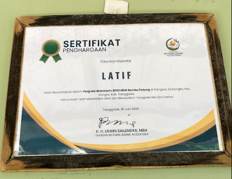
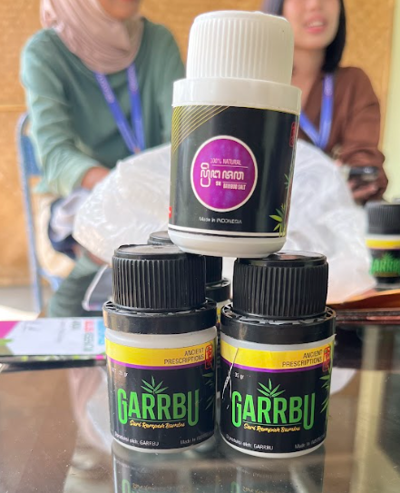
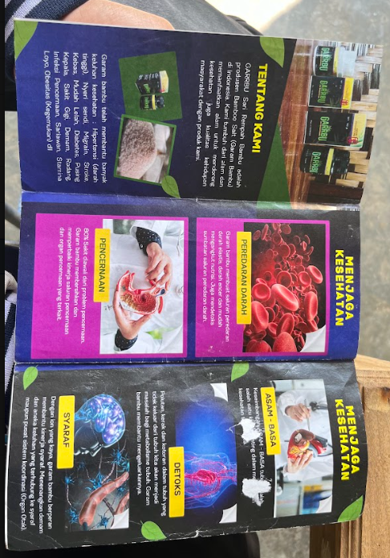
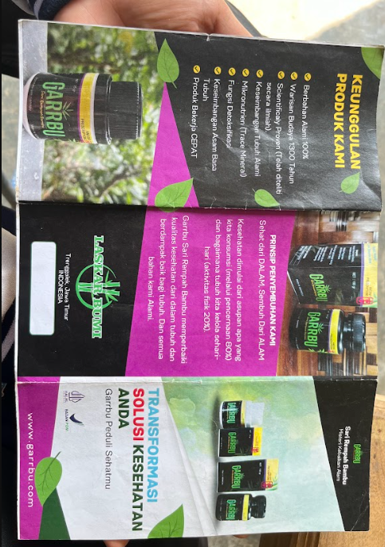
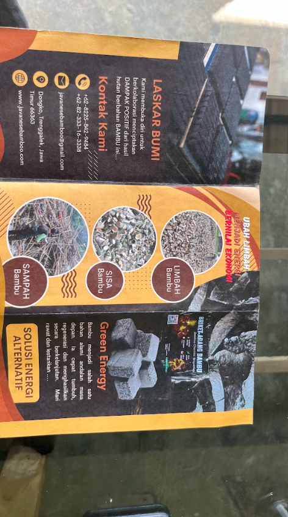